These 20 nifty products let you go off-road and off-grid in your tent, camper or RV.
Want to escape crowded campgrounds with those growling RV generators and get off the beaten path? We’ve got your plan all mapped out. The self-sufficiency travel advice and products on the following pages will allow you to make your tent, camper or RV more comfortable, safe and energy efficient while you travel.
My husband, Shawn Schreiner, and I are full-time back roads and backwoods wanderers: We live and work on the go in our 20-foot-long RV, traveling from place to place as our whims and work dictate, so being as independent as possible is always part of our strategy. Today’s compact renewable energy technologies and hand-powered gadgets liberate travelers like us from the electrical umbilical cord without sacrificing all of our creature comforts.
We’ve selected 20 travel tools and products that are solar- or human-powered, low maintenance, portable and durable (see Page 56 for each supplier’s contact information). And on Page 58, we describe how we use waste (free!) vegetable oil to power our diesel truck.
Solar Power
One of the benefits of having a home on the road is boondocking, which is free camping away from commercial campgrounds and energy hookups. Being completely energy independent with a photovoltaic (PV) system gives you the freedom to park your camper or RV almost anywhere, with the landowner’s permission.
A small PV system easily can supply enough power to run a few lights, a water pump and a few other small electric gizmos. PV systems are quiet, lightweight and require almost no attention - just keep the solar panels clean, and they’ll keep on producing power. Panels can be mounted flat on the RV’s roof or set into a tilting mount, which improves the power output by as much as 10 percent to 20 percent.
The average RV user with some basic 12-volt appliances consumes about 40 to 50 amp-hours of power per day. PV panels, which cost between $300 and $500, can produce about 20 to 35 amp-hours per day for you, depending on how many hours of sunlight the panels receive. They can be wired directly to charge a battery and power your 12-volt lights and pump, or you can add an inverter, which transforms DC energy to AC electricity, to power your small standard appliances.
For more than two decades, RV Solar Electric, Inc. [(800) 999-8520; www.rvsolarelectric.com ] has customized PV systems for recreational vehicles. Their years of experience led to the publication of the RVer's Guide to Solar Battery Charging, a popular manual that addresses hard-to-answer questions about RV solar systems. (See “RV Solar Sources,” Page 55, for more providers.)
Portable Power (See “Product Sources,” Page 56, for contact information.)
Put things that go bump in the night in the spotlight with the rugged, watertight Solaris Solar Lantern . Equivalent to a 40-watt light bulb, it’s bright enough to cook and read by. A full-spectrum compact-fluorescent bulb helps this lamp keep its cool, making it safe for use inside tents and campers. Charging the battery with the small, flexible solar panel (included) gives the lamp up to six hours of run time. About $150, from Real Goods.
LEDs (light-emitting diodes that don’t burn out) in the Everlite Solar Spotlight provide an intense, cool light source, perfect for reading or emergency lighting. The lamp needs only three hours of sunlight to power it for 12 hours. Use the solar panel to charge a cell phone, PDA (personal digital assistant) and other hand-held devices (adapters available). A nifty zip travel case keeps everything organized. About $100 to $120, at Real Goods.
Just because you’re traveling doesn’t mean you have to tune out. And with Coleman’s Freeplay Radio , you’ll have music and news whenever and wherever you go. A small solar panel mounted onto the top of this compact AM/FM radio charges the battery inside. Or if you’re low on sunshine, give the handcrank a spin to re-energize the radio (30 seconds of crank-time yields about 30 minutes of play-time). About $40, from Coleman.
You’ll welcome the security of the SideWinder cell-phone charger .. This pocket-sized generator gives you unlimited talk time when your batteries need a recharge. Two minutes of winding regenerates your cell phone to give you six minutes of talk time and about 30 minutes of standby. About $25, from Real Goods.
Throw these rugged, weatherproof flashlights in your pack or glove box - and never be left in the dark. We love the SolarVerter , a solar-powered flashlight that has red emergency flashers mounted at one end. It comes with mounting hardware for bicycles. A water-resistant body also makes it a perfect companion for kayaks and canoes. About $25, from Lehman’s. Coleman’s sturdy Freeplay Flashlight (above right) gives you the option of low or high beams, and a handcrank means you can have light whenever and wherever you need it. One minute of winding gives up to 12 minutes of “shine time.” About $35.
You can try cooking on your engine block, but using the sun is much more fun - not to mention economical and fuel-efficient. Unfold the Global Sun Oven’s reflectors and angle the glass front toward the sun to quickly heat this solar wonder. A temperature gauge mounted in the corner helps you keep an eye on the level. Our pasta e fagioli boiled and bubbled within 45 minutes at temperatures between 250 and 300 degrees. You’ll need to reserve room in your vehicle or RV to store this 2-cubic-foot, 21 pound oven, but it’s worth it. About $250, from Real Goods.
For folks who’d rather crank it up than plug it in, the Vortex Handcrank Blender saves the day. A two-speed gearing system lets you chop, froth and blend with ease. We tested the tough, stainless steel blade on ice, and it cut with razorlike efficiency. The base cleverly nests in the blender for quick storage. A C-clamp (included) helps keep everything from quaking when you’re cranking away. About $70, from GSI Outdoors.
Mess kits just got a whole lot neater with these stainless steel cooking sets from Coleman and GSI Outdoors. Both come with a nifty mesh sack. We loved the sturdy, quick-grip handles on GSI’s kit, and the lids, which do dual duty as fry pans. Coleman’s kit gets our kudos for containment: Three (a cup, bowl and fry pan) nest in one. The kit also contains a wind screen to shield the flame on your portable camp stove. Coleman Solo Cook Kit (below left), about $30. GSI Outdoors stainless steel mess kit (right), about $20. Coleman’s eXponent Xpert camp stove (under the GSI fry pan) puts an end to cold cans of trail beans. Brew and bubble your favorite dish over the hardy flame that will burn at up to 12,000 Btu (British thermal unit, a precise measure of heat energy). After you’ve downed your grub, pack this wee stove in your pocket. Available for about $75. (Use with Peak1 Powermax recyclable cartridges, with a 60 percent butane/40 percent propane fuel mix.)
This compact-yet-heavy-duty handcrank German coffee mill (below left) gives you fresh grounds for four cups of java in less than two minutes flat. About $55, from Lehman’s. Use those grounds to prepare the tastiest brew in this perfectly packable, absolutely indestructible Glacier Stainless Steel JavaPress (right). And for those who like to slowly savor their morning coffee or tea, the locking lid and double-walled thermal design keep drinks piping hot. About $35, from GSI Outdoors. (For truly great travel coffee, we recommend Mother’s Blend, an organic, Fair Trade, shade-grown coffee. See Page 57 for ordering information.)
Water Works
Sunbathing gains a whole new meaning when you take your ablutions with a solar shower. Fill the dark-colored bag with water, set it in the sun for a few hours and then wash under a spray of deliciously warm water. Stearns’ 5.5 gallon Air Power SunShower comes with a foot pump to give your shower an extra pressure oomph for about $40. Real Goods sells a 4-gallon Super Solar Shower model (without the pressure pump), for $15. Water heats from 60 degrees to 108 degrees in about 3 hours.
Restore your dingy dungarees and tainted t-shirts to their former glory with the Wonder Clean Pressure Handwasher , a mini laundromat on legs. Add a few quarts of warm water and a couple tablespoons of detergent to the polymer tub, seal the lid securely and spin for a couple of minutes. Pressure, created by the warm water, builds within the tub and helps push spots and soil right out. About $45, from Lehman’s.
Without a doubt, the most odious - not to mention odoriferous! - of camping activities is emptying the blackwater tank in your RV. Replacing your chemical flush toilet with a compact composting toilet will put an end to this hated task, and save water. The Luggable Loo portable potty is another option for dealing with “waste” (about $13, at most outdoor outfitters stores). On the road, use it with disposable waste bags , filled with an odor- and liquid-absorbing gel (about $30 for 12, from Lehman’s). When you’re parked, turn your loo into a compost collector. Just cover your deposits with peat moss, and when the bucket’s full, incorporate the contents into a compost bin or bury them.
Sun-Mar’s Ecolet toilets are specifically designed for marine and RV use; choose from the nonelectric system or the 12-volt evaporative heater and fan to dissipate excess liquid and any odors. About $900, from Sun-Mar.
Put an end to Montezuma’s Revenge, and quench your thirst safely with a Katadyn ceramic water filter . It removes bacteria, Giardia and Cryptosporidium. The 8-ounce Mini slips into a coat pocket or waist pack for easy transport and provides up to a half quart of clean drinking water per minute of pumping. About $90, at most outdoor outfitters stores.
RV Solar Sources
These companies offer “RV kits” usually consisting of a photovoltaic (PV) panel or two and a charge controller, which prevents your RV batteries from overcharging. As with any PV system, call the supplier to discuss your particular power needs.
Alternative Energy Store
(877) 878-4060 s
Worcester, Mass.
www.altenergystore.com
Backwoods Solar Electric Systems
(208) 263-4290
Sandpoint, Idaho
www.backwoodssolar.com
Real Goods
(800) 762-7325
Ukiah, Calif.
www.realgoods.com
LowestCostSolar
www.lowestcostsolar.com
Northern Arizona Wind & Sun
(800) 383-0195
Flagstaff, Ariz.
www.windsun.com
RV Solar Electric, Inc.
(800) 999-8520
Scottsdale, Ariz.
www.rvsolarelectric.com
Sierra Solar Systems
(888) 667-6527
Grass Valley, Calif.
www.sierrasolar.com
Sunelco Solar
(800) 338-6844
Hamilton, Mont.
www.sunelco.com
Product Sources
Real Goods (800) 762-7325 www.realgoods.com
Coleman (800) 835-3278 www.coleman.com
Lehman’s (877) 438-5346 www.lehmans.com
GSI Outdoors www.gsioutdoors.com (Check their Web site for distributors.)
Stearns (800) 333-1179 www.stearnsinc.com
Sun-Mar (800) 461-2461 www.sun-mar.com
|
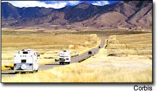 |
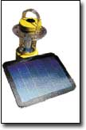 |
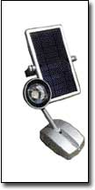 |
|
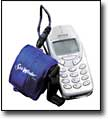 |
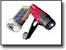 |
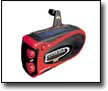 |
|
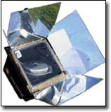 |
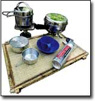 |
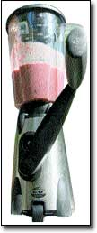 |
|
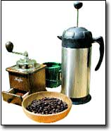 |
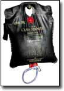 |
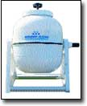 |
|
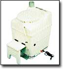 |
|
|